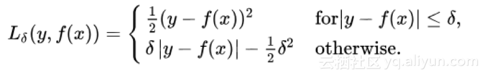

损失函数
损失函数（loss function）是用来估量模型的预测值f(x)与真实值Y的不一致程度，它是一个非负实值函数,通常使用L(Y, f(x))来表示，损失函数越小，模型的鲁棒性就越好。
损失函数分类
损失函数一般分为分类和回归两类
回归会预测给出一个数值结果而分类则会给出一个标签。
常用回归损失函数
均方误差MSE, 平方损失 – L2损失
是回归损失函数中最常用的误差，它是预测值与目标值之间差值的平方和
公式: $ MSE = \frac{\sum_{i=1}^{n}(y_i-y_i^p)^2}{n} $
特点: 平方损失函数是光滑的，可以用梯度下降法求解，但是，当预测值和真实值差异较大时，它的惩罚力度较大，因此对异常点较为敏感。平均绝对误差 – L1损失
常用的回归损失函数，它是目标值与预测值之差绝对值的和，表示了预测值的平均误差幅度，而不需要考虑误差的方向
公式: $ MAE = \frac{|y_i - y_i^p|}{n} $
特点: 绝对损失函数对异常点不那么敏感，其鲁棒性比平方损失更强一些，但是它在f = y 处不可导.Huber损失 – 平滑平均绝对误差
相比于平方损失来说对于异常值不敏感，但它同样保持了可微的特性。它基于绝对误差但在误差很小的时候变成了平方误差。
公式: 
特点: Huber损失函数在 ∣f−y∣较小时为平方损失，在较大时为线性损失，且处处可导，对异常点鲁棒性较好log-cosh损失函数
公式: $ L(f,y) = \log(cosh(f-y)) $ $ cosh(x) = (e^x + e^{-x})/2 $
特点: log-cosh损失函数比均方损失函数更加光滑，具有huber损失函数的所有优点，且二阶可导。因此可以使用牛顿法来优化计算，但是在误差很大情况下，一阶梯度和Hessian会变成定值，导致牛顿法失效。分位数损失函数
公式: $ L(f,y) = \sum_{y_i<f_i}(1-\gamma)|y_i - f_i| + \sum_{y_i \beq f_i} \gamma|y_i - f_i| $
特点: 预测的是目标的取值范围而不是值, $ \gamma $是所需的分位数,其值介于0-1之间
常用分类损失函数
0-1损失函数
预测值和目标值不相等为1，否则为0
公式:
特点: 0-1损失函数可以直观的刻画分类的错误率，但是因为其非凸，非光滑的特点，使得算法很难对其进行直接优化Hinge损失函数(SVM)
公式: $ L(f,y) = max(0, 1 - fy) $
特点: Hinge损失函数是0-1损失函数的一个代理损失函数，也是其紧上界，当 fy≥0,fy≥0 时，不对模型做惩罚。因为在fy = 1处不可导, 因此不能用梯度下降算法对其优化,只能用次梯度下降法对数损失函数（logarithmic loss）LR
样本预测值和实际值的误差符合高斯分布，使用极大似然估计的方法，取对数得到损失函数
经典的对数损失函数包括entropy和softmax，一般在做分类问题的时候使用
公式: $ L(Y, P(Y|X)) = -\logP(Y|X) $
特点:Logistic损失函数是0-1损失函数的另一个代理损失函数，它也是0-1损失函数的凸上界，且该函数处处光滑。但是该损失函数对所有样本点都惩罚，因此对异常值更加敏感交叉商损失函数Cross-Entropy
公式: $ L(f,y) = -log_2(\frac{1+fy}{2}) $
特点: 交叉熵损失函数也是0-1损失函数的光滑凸上界指数损失函数(AdaBoost)
公式: $ L(f,y) = e^{-fy}$
特点: 指数损失函数是AdaBoost里使用的损失函数，同样地，它对异常点较为敏感，鲁棒性不够
损失函数的选择
损失函数的选取依赖于参数的数量、异常值、机器学习算法、梯度下降的效率、导数求取的难易和预测的置信度等若干方面。
tf.keras.losses.BinaryCrossentropy(from_logits = True)
其中，当模型最后一层没有经过激活函数时from_logits设置为True，否则为False。
因为logits表示网络的直接输出 。如果网络输出的结果经过了sigmoid或者softmax的概率化，那么from_logits=False就表示把已经概率化了的输出，重新映射回原值。如果网络输出的结果没经过概率化，则from_logits=True，表示不进行任何操作。